STORY
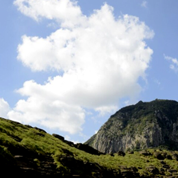
NATURE
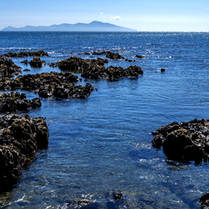
WATER
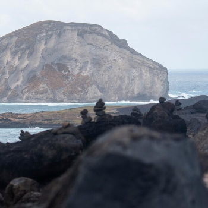
STONE
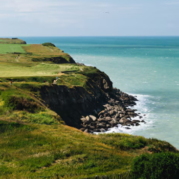
WIND
제주삼다수가 환경을 사랑하는 방식
친환경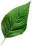
패키징 솔루션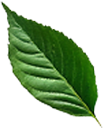
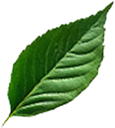
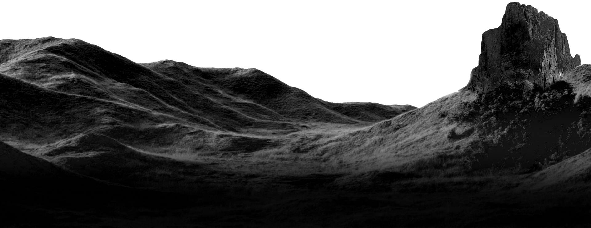
지속가능한 내일을 위한
우리의 여정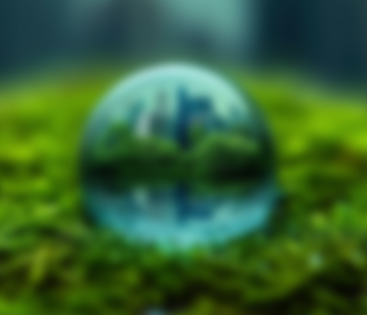
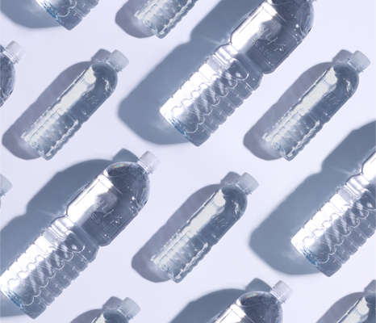
무라벨
비움으로 완성한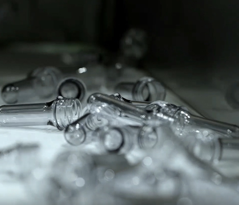
경량화
플라스틱의 무게를 덜어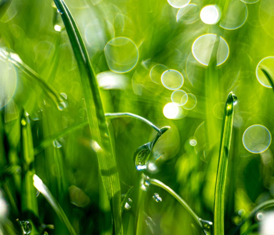
재생원료
버려진 병에서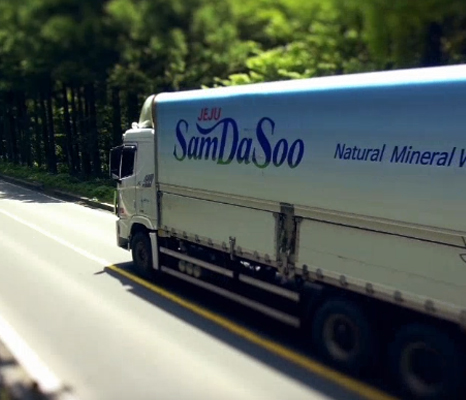
다각화
친환경의 경계를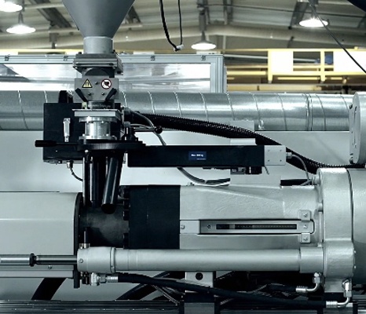
대체소재
플라스틱을 넘어,친환경의 기준이 되다
지구를 위한 노력제주삼다수 리본(re:born)
분리수거된 투명 페트병을 다시 사용하는 Bottle to Bottle로 플라스틱 자원 순환 경제 실현(CR-PET)제주삼다수 그린
'그린 에디션' 무라벨, 무색병, 무색캡국무총리상 수상
‘제16회 대한민국 패키징 대전: 코리아 스타 어워즈 2022’에서 국무총리상 수상친환경 패키지 연구개발
지구를 위한 도전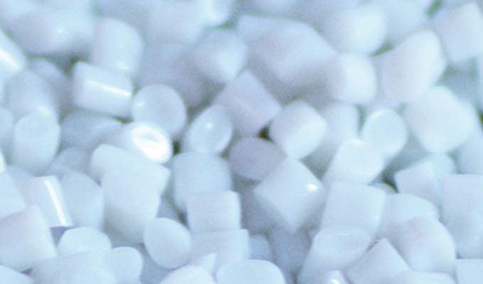
고품질 재생 페트 용기 개발
다시 태어나기 위한 되돌림 'Bottle to Bottle' 리사이클 페트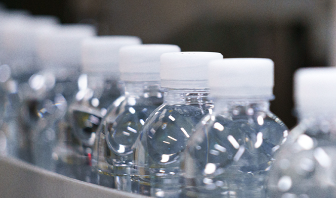
플라스틱 저감 경량화
자원순환 확대를 위한 적극적인 경량화 용기 개발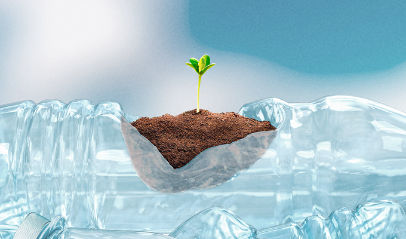
탄소저감 BIO 용기
사탕수수 유래의 BIO-PET 소재는 재활용 가능한 자원순환 소재로 기존 PET 대비 탄소 배출량을 28% 감소할 수 있습니다.